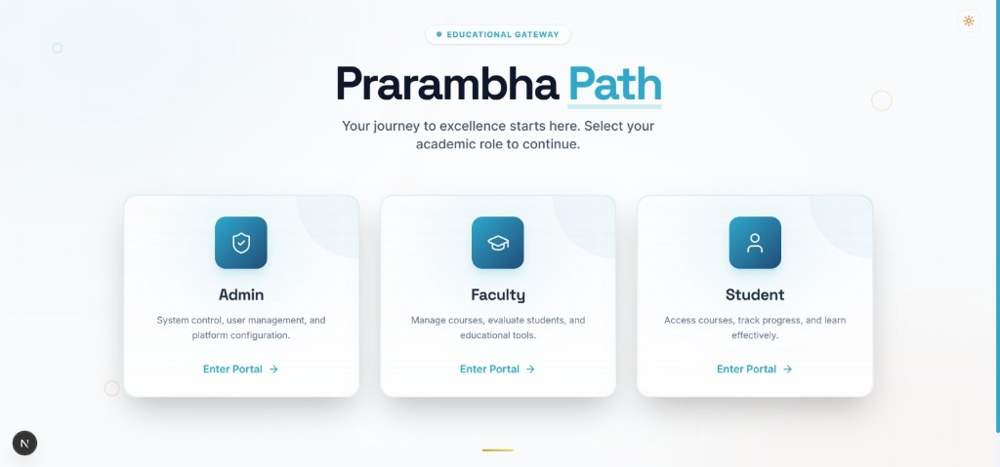
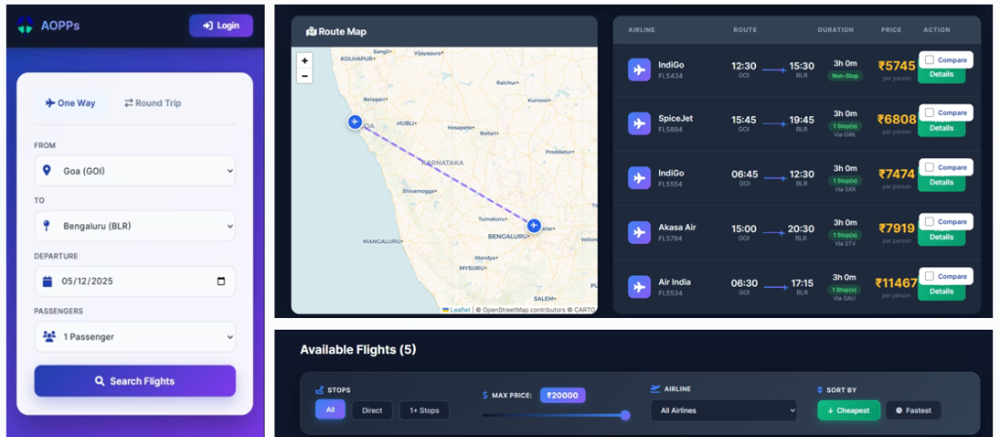
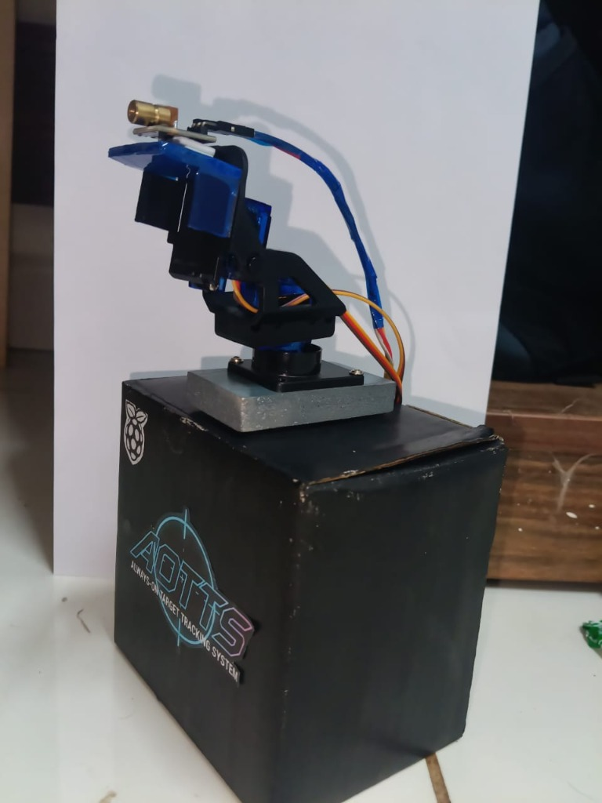
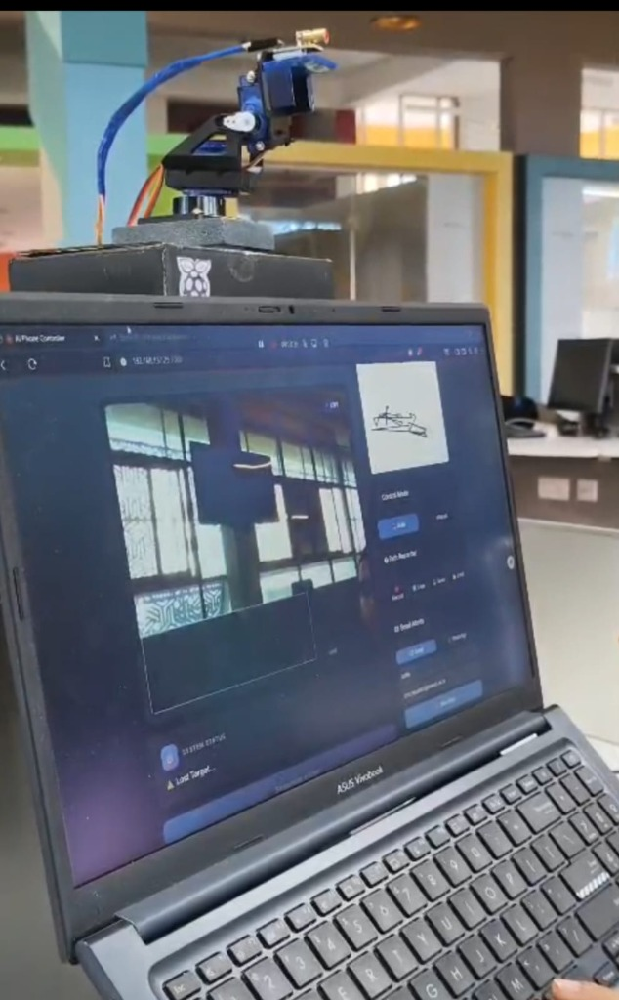

Projects
Academic engineering solutions and algorithm visualizers I've designed.

System Blueprints & Modeling
┌─────────────────────────────────────────────────────────────────┐
│ Client Browser │
└───────────────┬──────────────────────────────┬─────────────────┘
│ HTTPS (SSR / CSR) │ Razorpay SDK
▼ ▼
┌──────────────────────────┐ ┌──────────────────────────────┐
│ Next.js 14 Frontend │ │ Razorpay Payment Gateway │
│ (App Router, Port 3000)│ └──────────────────────────────┘
│ │
│ ┌────────────────────┐ │ Next.js Server Actions (direct DB)
│ │ Middleware.ts │ │◄──────────────────────────────────────┐
│ │ (JWT Gate / RBAC) │ │ │
│ └────────────────────┘ │ │
│ │ fetch() REST calls │
│ Client Components ──────┼────────────────────────► Express.js │
│ Server Components │ API Server │
│ Server Actions ─────────┼──────────────────────► Port 5000 │
└──────────────────────────┘ │
│
┌────────────────────────────┘
│
▼
┌───────────────────────┐
│ MongoDB Atlas │
│ (Shared Database) │
└───────────────────────┘
sequenceDiagram
actor Student
participant Browser
participant NextJS as Next.js Server
participant Express as Express API (5000)
participant MongoDB
Student->>Browser: Enter email + password
Browser->>NextJS: loginAction()
NextJS->>Express: POST /api/auth/login
Express->>MongoDB: User.findOne()
MongoDB-->>Express: User document
Express->>Express: bcrypt.compare()
alt Valid credentials
Express-->>NextJS: 200 {user:{id,role}}
NextJS->>NextJS: sign JWT (24h)
NextJS->>Browser: Set cookie "token"
Browser-->>Student: Redirect to /student dashboard
else Invalid credentials
Express-->>NextJS: 401 Unauthorized
Browser-->>Student: Show error toast
end
Prarambha Path Evening School (PPES)
Project Overview
The **Prarambha Path Digital Platform** is a web-based portal developed to digitize and optimize operations for the Prarambha Path Evening School initiative. It serves as an administrative core and a classroom support ecosystem bridging digital divides in under-resourced education.
Problem Statement
Evening schools face administrative bottlenecks, relying on paper lists for attendance logs, student performance checks, and homework distributions. This results in manual overhead, lack of real-time analytics, and data loss.
Core Objectives
- Automate student check-ins and performance logging.
- Establish volunteer dashboard interfaces for simple class administration.
- Design secure web systems utilizing light databases (Supabase).
Features
- **Student Registry Control**: Admin dashboard to add/edit student details and classes.
- **Digital Attendance Sheet**: Quick check-in grid that saves records to database.
- **Class progress graphs**: Graphical stats tracking monthly attendance.
Key Learnings & Engineering Challenges
**State synchronization** in vanilla JS without React was a major challenge. Managed state via clean modular script dispatchers. Integrating Supabase Client APIs directly with Vanilla JS modules helped structure secure database requests.
Technology Stack
More Engineering Projects

AOPS - Airline Optimization Path System
A graph-theoretical flight path solver designed for the **Design and Analysis of Algorithms (DAA)** curriculum. It models global airport nodes as graphs and solves path questions using greedy and dynamic routing algorithms.
Core Features & Challenges:
- Implements **Dijkstra’s** and **Bellman-Ford** route algorithms.
- Heuristic optimization based on fuel cost, delay indexes, and air-traffic.
- Challenge: Visualizing nodes responsively. Solved with custom SVG coordinate plots.


AOTTS - Always On Target Tracking System
A real-time Computer Vision system using a Raspberry Pi-powered pan-tilt servo mount with a camera to autonomously detect and track moving targets using YOLOv8. The system streams live video to a web dashboard with telemetry analytics.
Hardware Setup:
Core Features & Challenges:
- YOLOv8 real-time object detection on live Pi camera stream.
- Servo motors auto-adjust to keep target centered in frame.
- Web dashboard (Flask) displays live feed, FPS & tracking coords.
- Challenge: Reduced inference lag using frame-skip & resolution tuning.